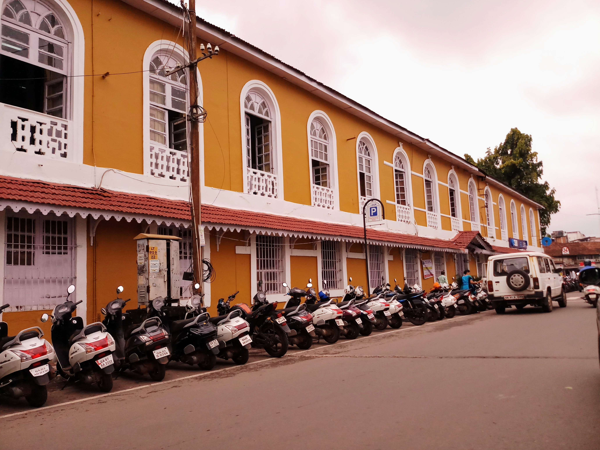
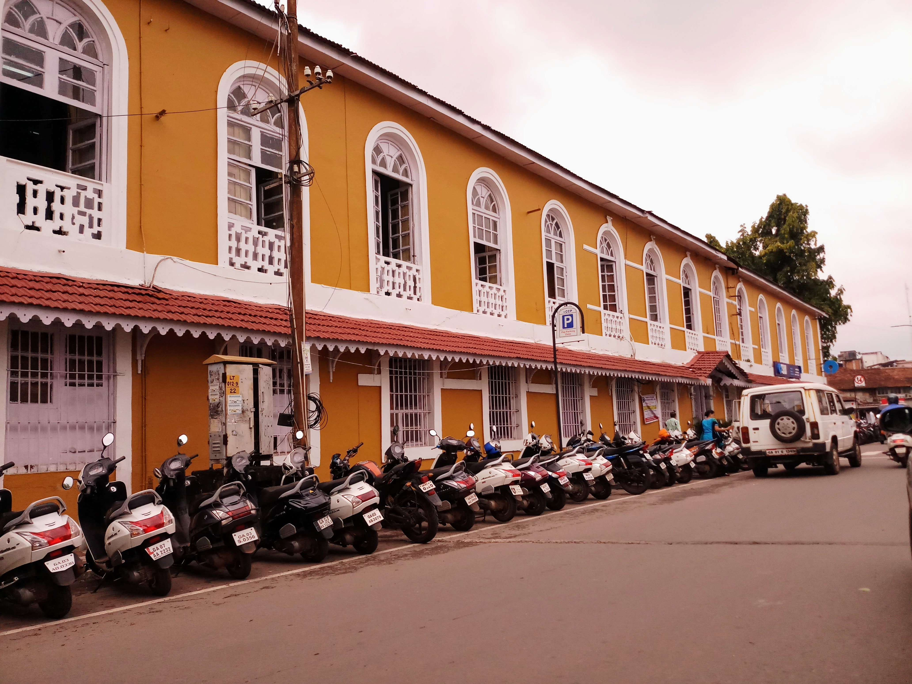

Mumbai
Goa
It has been a year since I moved to Bombay. Although my college campus is "isolated" from the Bombay elements, I realise everyday that Bombay rules over the people that live in it. You are a domino, and there are millions of them around you. At the end of the day, you all influence each other and fall. The next day you realise you're standing there again. Déjà vu?
Of course, Bombay has some amazing places you could explore. But personally, I would prefer those places "without the crowd." Since I don't have ambition to become a Nazi, I drop the idea.
Goa
Goa has been a home to me right through my childhood. The places and few people I have met here will always be in my heart. I think unlike Bombay, Goa remains calm and while it does so, it stays right by your side. "You need time? I'm right here buddy, we can chill for a while."- Says Goa. I think words will not do justice to what this place has to offer, so I will attach some photographs for you to see.
Also, the most common question I am asked by my fellow batchmates is- " Dude, is your house on the beach?"
 
